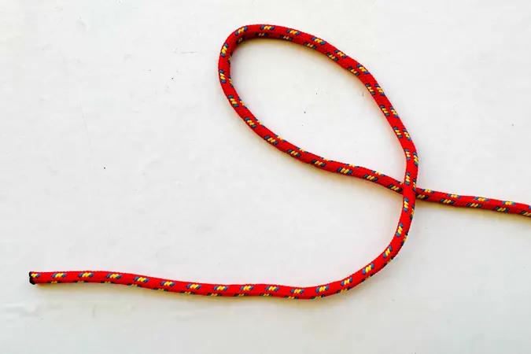
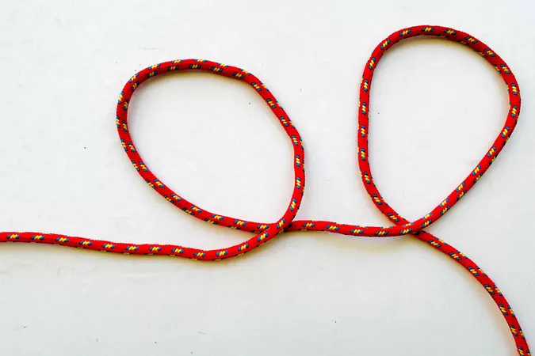
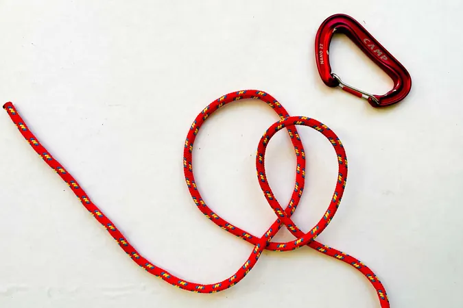
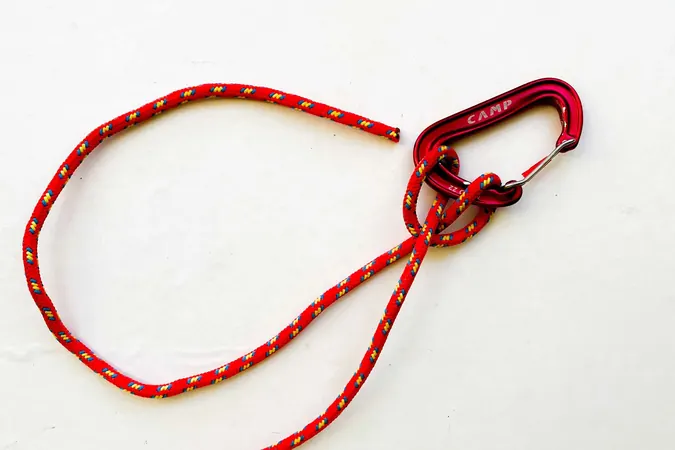

Girth hitch
A simple knot for hanging a loop on an anchor, branch, or stake — e.g. a tent guy line. Quick to tie and easily converted into a Munter hitch. It can slip under uneven load, so use a backup knot in critical spots.
- Pass the rope over the anchor so both ends hang down next to each other.
- Fold the rope into a loop and pass that loop under the anchor.
- Tighten by pulling the loop up snug against the anchor.
Step-by-step photos



